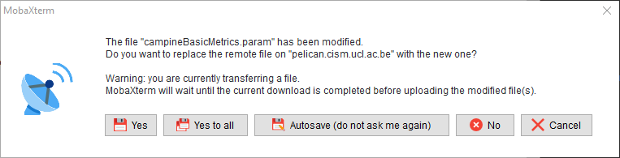

MobaXterm tips and hints
When you download files from the server (do not “Drag and drop”):
- Select them manually.
- Right-click and select “Download”.
- Choose a directory.
To paste a copied text line, simply right-click in the terminal window, where you would write the text line.
To visualise or edit text files from the server:
- In the file browser of MobaXterm software, double-click on the file. It will be opened in Notepad.
- View and/or edit it.
- Save the file and select “Yes” when the following screen appears. It will upload the modified file directly on the server.
